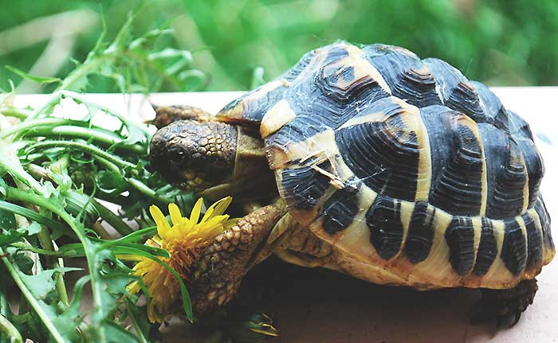

La carapace de la tortue
Croissance
À la naissance la carapace est souvent molle. Elle grandit bien sûr avec l'âge. En général, jusqu’à ce que la tortue devienne adulte. Elle est alimentée par des petits vaisseaux sanguins.
La croissance des tortues s’effectue en cycles. Lorsqu’un cycle est terminé, un anneau se forme sur la carapace. On peut alors compter approximativement l’âge de la tortue ; toutefois, les anneaux peuvent s’effacer, par conséquent il est difficile de connaître précisément l’âge d’une tortue par cette technique.
Prédateur
Les carapaces fournissent une bonne protection aux tortues. Peu d'animaux sont capables de briser cette protection. Les jeunes, venant d'éclore, sont quant à eux, des proies faciles pour les prédateurs (mammifères, oiseaux, poissons, autres reptiles…), leur carapace étant presque toujours molle et leurs os insuffisamment solides.
Autres rôles
La carapace sert aussi de camouflage à la tortue. Les carapaces de beaucoup d'espèces des tortues sont colorées et modelées et permettent de reconnaître des individus d'une même espèce. En outre, la carapace des tortues terrestres leur sert à contrôler leur température, en effet les tortues sont des animaux à sang froid. La carapace accumule de l'énergie pendant les périodes chaudes, mais en contrepartie rend l'hibernation (et l'enterrement) plus difficile dans les périodes hivernales des zones à climat tempéré pour les espèces qui y vivent. Les tortues de Horsfield ont des carapaces plus plates pour cette raison.
